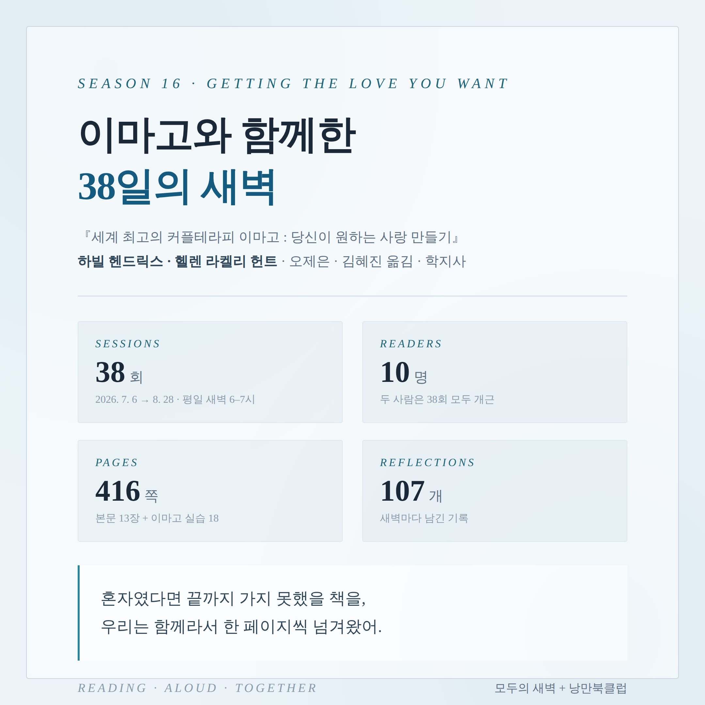
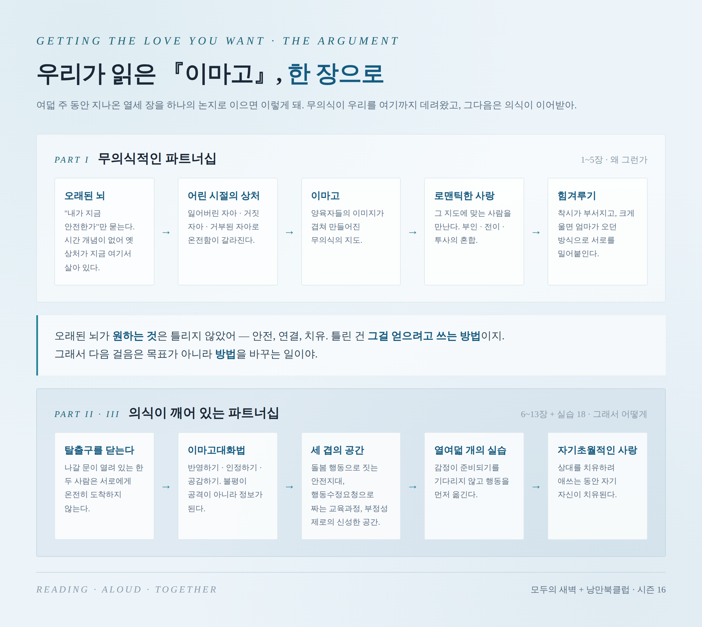
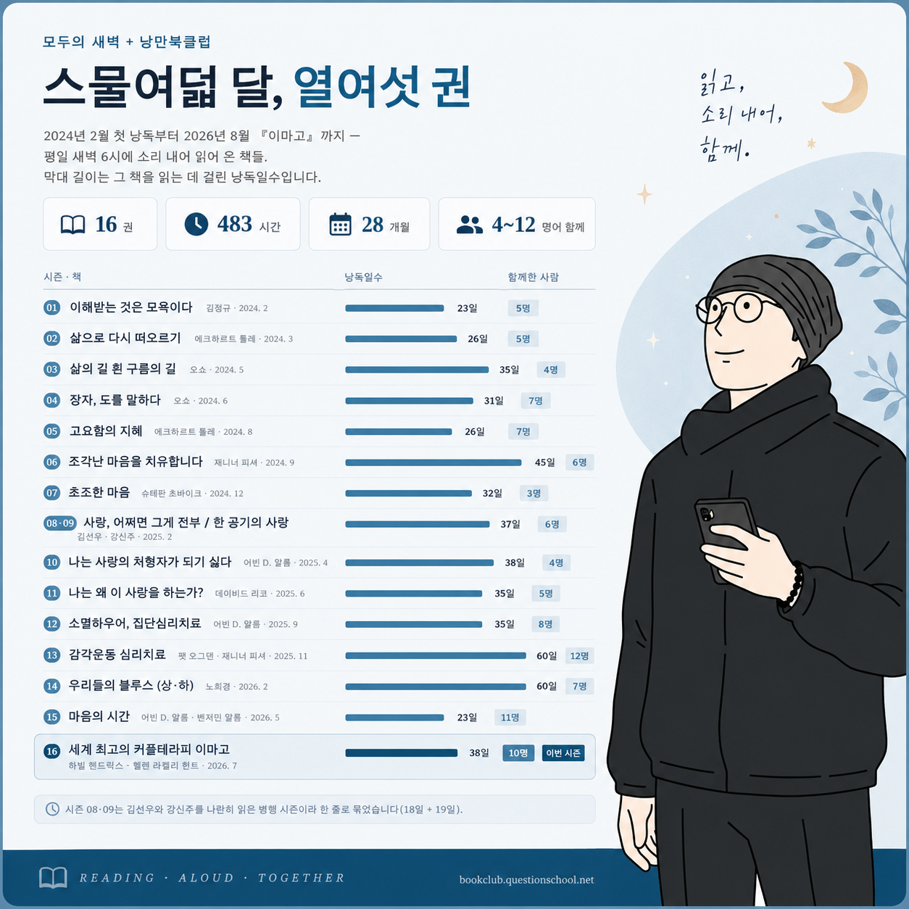
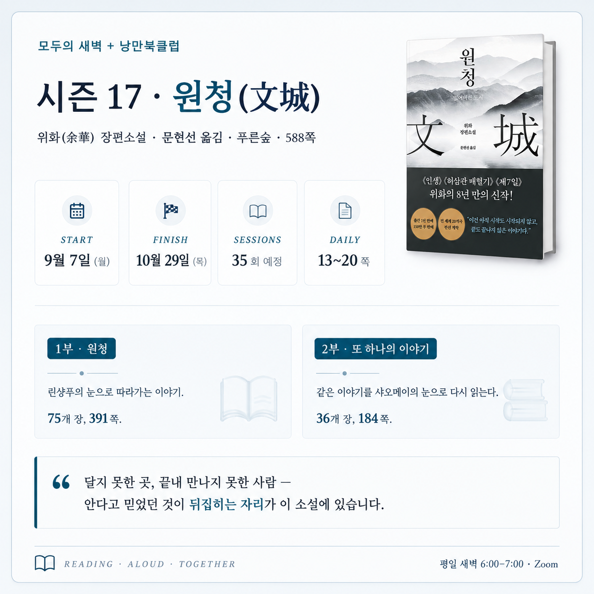

38일 동안 세계 최고의 사랑 만들기를
함께 공부한 새벽의 친구들에게

오늘 새벽, 우리 시즌 16의 마지막 낭독이 끝났어. 하빌 헨드릭스와 헬렌 라켈리 헌트의 『세계 최고의 커플테라피 이마고 : 당신이 원하는 사랑 만들기』(오제은·김혜진 옮김, 학지사)를 7월 6일부터 여덟 주 동안 함께 읽었지.
평일 새벽 6시부터 7시까지, 앞의 30분은 소리 내어 낭독하고, 뒤의 30분은 서로의 이야기를 진솔하게 나눴어. 그렇게 38번의 만남이 이루어졌네.
| 기간 | 2026년 7월 6일 (월) → 8월 28일 (금) |
|---|---|
| 회차 | 38회 · 평일 새벽 6:00–7:00 · Zoom |
| 함께한 사람 | 10명 |
| 낭독 분량 | 416쪽 — 본문 13장 + 이마고 실습 18개 |
| 남긴 기록 | 107개 |
| 평균 출석률 | 70% |
숫자 가운데 오래 눈이 머무는 게 둘 있어. 하나는 38분의 38 — 한 번도 빠지지 않고 끝까지 자리를 지킨 사람이 둘 있었다는 것. 다른 하나는 함께 남긴 107개의 기록 — 읽고 나서 그냥 흩어지지 않고, 그날의 한 줄을 남겨 둔 흔적이 그만큼 많이 쌓였다는 거야.
물론 70%라는 숫자 밖에는 불가피하게 참석하지 못한 30%가 있다는 이야기이기도 해. 바쁘게 살아가다 보면 새벽에 일어나는 일은 늘 어렵지. 그래서 처음부터 매일 참석해야 한다는 부담은 내려놓고 오라고 부탁했었어. 늦잠 잔 날이 있어도 다음 날 아침 화면에 다시 얼굴이 뜨면 그걸로 충분했고.
한 가지 더. 우리는 본명 대신 별칭을 쓰고 수평어로 이야기하지. 직함도 나이도 잠시 내려놓고 책 앞에 나란히 앉기 위한 작은 장치야. 나이 차이와 상관없이 친절하고 친밀함이 가득 담긴 반말, 곧 수평어를 쓰는 게 처음엔 조금 어색한데, 지내다 보면 학창시절 또래 친구를 만난 것처럼 금방 친해지는 우리를 마주하게 돼.

세계 최고의 커플테라피 책이라 주장하는 이 책엔 부부관계를 위한 풍성한 가르침이 담겨 있어. 먼저 우리가 특정한 한 사람에게 그토록 끌린 이유는, 오래된 뇌가 그 사람과 어린 시절의 양육자를 같은 사람으로 혼동했기 때문이라는 것. 그 혼동 위에서 로맨틱한 사랑이 피어나고, 시간이 지나 착시가 걷히면 힘겨루기라 부르는 갈등의 시간이 시작돼. 여기까지가 1부의 주요 내용이었지.
2부에서 저자들이 주장하는 '의식이 깨어 있는 파트너십'이야말로 커플들이 새롭게 배워야 할 지혜야. 오래된 뇌가 원하는 것은 틀리지 않았다는 것. 안전, 연결, 어린 시절 상처의 치유 — 원하는 건 옳고, 틀린 건 그걸 얻으려고 쓰는 방법이라는 것. 그래서 이 책이 제안하는 건 목표를 바꾸는 일이 아니라 방법을 바꾸는 일이야. 탈출구를 닫고, 반영하기·인정하기·공감하기의 대화법을 익히고, 감정이 준비될 때까지 기다리지 않고 행동을 먼저 옮기는 것.
그리고 3부에는 그 방법을 실제로 해 보는 열여덟 개의 실습이 있었지. 우리는 이 실습들도 건너뛰지 않고 함께 읽었어. (다만 자기 짝꿍과의 실습은 각자의 몫으로 남겨 둘 수밖에 없어 아쉬웠고.)
낭독이 끝나도, 혼자서 자기 속도로 책을 다시 읽어 보고 싶은 마음이 남아 있을 것 같아. 파트너랑 같이 읽고 실습해 보고 싶은 내용도 있겠지. 시즌 16에서는 함께 읽은 내용과 실습을 다시 쉽게 찾아볼 수 있도록 「이마고 다시 보기」 페이지를 만들어 뒀어.

2024년 2월 13일 첫 낭독 모임을 시작했는데, 벌써 16권의 책을 함께 읽었어. 시간으로 따지자면, 스물여덟 달 동안 483시간을 함께 읽었네. 농담님과는 이 모든 시즌을 함께 했고.
김정규 교수님, 에크하르트 톨레와 오쇼, 재니너 피셔와 어빈 얄롬, 슈테판 츠바이크, 강신주와 김선우, 데이비드 리코, 노희경…… 그리고 이번에 처음 만난 하빌과 헬렌 부부까지, 멋진 작가들과 함께한 시간들이었어. 물론 함께 낭독한 친구들이야말로 귀한 인연들이지. 목록을 다시 정리해 보니 감회가 새롭다.
책은 매개일 뿐이야. 당신을 만나기 위한……

9월 7일 월요일, 위화(余華)의 장편소설 『원청(文城)』(문현선 옮김, 푸른숲, 588쪽)으로 시즌 17을 시작해. 내 예상으로는 10월 29일까지 35회에 걸쳐 읽게 될 것 같아.
그동안 심리학과 치유의 언어를 중심으로 읽어 왔으니, 이번엔 소설이라는 장르 — 생생한 인물들의 이야기 속으로 들어가 보려고 해. 닿지 못한 곳과 끝내 만나지 못한 사람에 관한 소설이라고 하더라. 이 책은 크게 2부로 구성돼 있어. 1부를 린샹푸의 눈으로 다 읽고 나면, 2부에서 같은 이야기를 샤오메이의 눈으로 다시 읽게 돼. 안다고 믿었던 게 뒤집히는 경험을 하게 된다고 하네. 농담은 위화 작가의 책을 많이 읽어봤다고 하는데, 나(지평)는 위화 작가가 처음이야. 모임이 시작되기 전에 위화 작가의 에세이 몇 편을 읽어보고 있는데, 그래서인지 더욱 기대되는 소설이야.
주말과 법정공휴일을 빼고, 평일 새벽 6시부터 7시까지, 하루 열댓 쪽을 읽어 나갈 예정이야. 혼자라면 끝까지 읽기 어려운 책을, 함께 소리 내어 읽어 보자. 이번엔 소설이라 읽는 재미가 더할 것 같아. 새로 오는 사람도, 오래 함께한 사람도 모두 환영이야. 함께하고 싶은 친구들은 얼른 다음 모임 신청해 줘.
여덟 주 동안 고마웠어. 새벽마다 그 자리에 있어 준 것, 읽어 준 것, 그리고 읽고 나서 자기 이야기를 꺼내 준 것 전부.